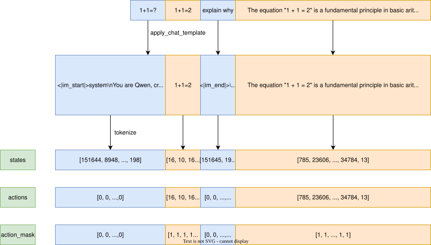

SFT with RL2#
Dataset#
Tokenizer#
from transformers import AutoTokenizer
tokenizer = AutoTokenizer.from_pretrained('/Users/xiayunhui/github/notes-on-llm/Qwen2.5-0.5B-Instruct')
messages = [
{'role': 'user', 'content': '1+1=?'},
{'role': 'assistant', 'content': '1+1=2'},
{'role': 'user', 'content': 'explain why'},
{'role': 'assistant', 'content': 'The equation "1 + 1 = 2" is a fundamental principle in basic arithmetic.'}
]
message = messages[0]
# add_special_tokens: this is useful if you want to add bos or eos tokens automatically.
state = tokenizer.encode(message["content"], add_special_tokens=False)
state
[16, 10, 16, 19884]
tokenizer.decode(tokenizer.apply_chat_template(messages[: 3], add_generation_prompt=True))
'<|im_start|>system\nYou are Qwen, created by Alibaba Cloud. You are a helpful assistant.<|im_end|>\n<|im_start|>user\n1+1=?<|im_end|>\n<|im_start|>assistant\n1+1=2<|im_end|>\n<|im_start|>user\nexplain why<|im_end|>\n<|im_start|>assistant\n'
import torch
from torch.utils.data import Dataset
def tokenize_messages(
tokenizer, # Tokenizer for converting text to tokens
messages, # List of chat messages (each with "role" and "content")
tool=None, # Optional parameter for tool integration in conversations
apply_chat_template=True # Whether to use tokenizer's chat formatting
):
# states: context tokens (from user/system messages)
# actions: target tokens (from assistant responses)
# action_mask: marks which tokens are training targets (1=assistant, 0=context)
states, actions, action_mask = [], [], []
for idx, message in enumerate(messages):
# Process assistant messages (model's target outputs)
if message["role"] == "assistant":
state = tokenizer.encode(message["content"], add_special_tokens=False)
actions.extend(state) # Add assistant tokens to action targets
action_mask.extend([1]*len(state)) # Mark as training targets
else:
# Process user/system messages (context)
if apply_chat_template:
# Use tokenizer's chat template for proper multi-turn formatting
next_states = tokenizer.apply_chat_template(
messages[:idx + 1], # All messages up to current one
tool=tool,
# Add generation prompt if next message is from assistant
add_generation_prompt=idx + 1 < len(messages) and messages[idx + 1]["role"] == "assistant"
)
# Ensure tokenization is incremental (previous tokens remain unchanged)
assert next_states[:len(states)] == states, "Tokenizer must preserve previous message tokens"
state = next_states[len(states):] # Only take new tokens from current message
else:
state = tokenizer.encode(message["content"], add_special_tokens=False)
actions.extend([0]*len(state)) # No action target for context
action_mask.extend([0]*len(state)) # Don't train on context tokens
states.extend(state) # Build full state sequence
# Return tokenized data as PyTorch tensors (shifted for language modeling)
return {
"states": torch.LongTensor(states[:-1]), # Input context (all except last token)
"actions": torch.LongTensor(actions[1:]), # Target outputs (shifted by 1)
"action_mask": torch.LongTensor(action_mask[1:]), # Mask for training focus
"position_ids": torch.arange(len(states) - 1) # Positional encoding indices
}

tokenize_messages(tokenizer=tokenizer, messages=messages)
{'states': tensor([151644, 8948, 198, 2610, 525, 1207, 16948, 11, 3465,
553, 54364, 14817, 13, 1446, 525, 264, 10950, 17847,
13, 151645, 198, 151644, 872, 198, 16, 10, 16,
19884, 151645, 198, 151644, 77091, 198, 16, 10, 16,
28, 17, 151645, 198, 151644, 872, 198, 94344, 3170,
151645, 198, 151644, 77091, 198, 785, 23606, 330, 16,
488, 220, 16, 284, 220, 17, 1, 374, 264,
15811, 17508, 304, 6770, 34784]),
'actions': tensor([ 0, 0, 0, 0, 0, 0, 0, 0, 0, 0,
0, 0, 0, 0, 0, 0, 0, 0, 0, 0,
0, 0, 0, 0, 0, 0, 0, 0, 0, 0,
0, 0, 16, 10, 16, 28, 17, 0, 0, 0,
0, 0, 0, 0, 0, 0, 0, 0, 0, 785,
23606, 330, 16, 488, 220, 16, 284, 220, 17, 1,
374, 264, 15811, 17508, 304, 6770, 34784, 13]),
'action_mask': tensor([0, 0, 0, 0, 0, 0, 0, 0, 0, 0, 0, 0, 0, 0, 0, 0, 0, 0, 0, 0, 0, 0, 0, 0,
0, 0, 0, 0, 0, 0, 0, 0, 1, 1, 1, 1, 1, 0, 0, 0, 0, 0, 0, 0, 0, 0, 0, 0,
0, 1, 1, 1, 1, 1, 1, 1, 1, 1, 1, 1, 1, 1, 1, 1, 1, 1, 1, 1]),
'position_ids': tensor([ 0, 1, 2, 3, 4, 5, 6, 7, 8, 9, 10, 11, 12, 13, 14, 15, 16, 17,
18, 19, 20, 21, 22, 23, 24, 25, 26, 27, 28, 29, 30, 31, 32, 33, 34, 35,
36, 37, 38, 39, 40, 41, 42, 43, 44, 45, 46, 47, 48, 49, 50, 51, 52, 53,
54, 55, 56, 57, 58, 59, 60, 61, 62, 63, 64, 65, 66, 67])}
Dataset#
import os
import datasets
def load_dataset(data_path):
if "@" in data_path:
split, data_path = data_path.split("@")
else:
split = "train"
ext = os.path.splitext(data_path)[-1].strip(".")
if ext in ["json", "jsonl", "csv", "parquet", "arrow"]:
if ext == "jsonl":
ext = "json"
return datasets.load_dataset(ext, data_files=data_path, split=split)
else:
# Load from Hugging Face Hub dataset by name if no extension matches
return datasets.load_dataset(data_path, split=split)
Tip
datasets.load_dataset 不会一次性将数据全部读入内存，而是通过延迟加载和按需读取实现高效处理。
class BaseDataset(Dataset):
"""Base class for conversational datasets"""
def __init__(self, data_path, tokenizer, max_length):
self.dataset = load_dataset(data_path) # Load dataset using our custom loader
self.tokenizer = tokenizer # Store tokenizer for processing
self.max_length = max_length # Maximum sequence length for truncation/padding
def __len__(self):
return len(self.dataset) # Return number of samples in dataset
class SFTDataset(BaseDataset):
def __getitem__(self, idx):
messages = self.dataset[idx]["messages"]
ex = tokenize_messages(self.tokenizer, messages)
return {k: v[:self.max_length] for k, v in ex.items()}
def collate_fn(self, batch):
return list(batch)
Tip
在 PyTorch 的 DataLoader 中，collate_fn 的核心作用是将多个样本（由 __getitem__ 返回）整理成一个批次（batch）数据。默认情况下，DataLoader 会尝试将样本自动拼接成张量，但当样本结构复杂（如长度可变的列表、字典）时，需要自定义 collate_fn 来处理。
上面 collate_fn 的输入和输出：
输入：一个列表，包含
batch_size个样本，每个样本是__getitem__返回的结果（在本例中是字典，如{"states": tensor, "actions": tensor, ...}）。输出：整理后的批次数据（格式由用户定义，本例中直接返回列表）。
Mini Batch#
# data_list draw from SFTDataset
minibatches = self.actor.scatter_and_pack_data_list(data_list)
def scatter_and_pack_data_list(
self, data_list, pack_minibatches=False, pair=False
):
if pack_minibatches:
...
if self.device_mesh["tp"].get_local_rank() == 0:
if self.device_mesh["sp"].get_local_rank() == 0:
if self.device_mesh["dp"].get_local_rank() == 0:
all_rank_data_lists = group_data_list_into_all_rank_data_lists(
self, data_list, pair
)
data_lists = split_and_scatter_list(
all_rank_data_lists
if self.device_mesh["dp"].get_local_rank() == 0
else None,
self.device_mesh["dp"]
)[0]
data_lists = scatter_data_lists_along_sp_dim(
data_lists
if self.device_mesh["sp"].get_local_rank() == 0
else None,
self.device_mesh["sp"]
)
data_lists = scatter_data_lists_along_tp_dim(
data_lists
if self.device_mesh["tp"].get_local_rank() == 0
else None,
self.device_mesh["tp"]
)
return pack_data_lists_into_minibatches(
data_lists,
self.device_mesh["tp"].size()
)
def group_data_list_into_all_rank_data_lists(worker, data_list, pair=False):
# We use ZigZag Ring Attention to partition sequences, where
# the length of each sequence needs to be multiple of 2 *
# sp size and each rank sequentially get the head and tail.
# See https://zhuanlan.zhihu.com/p/683714620.
multiple_of = 2 * worker.device_mesh["sp"].size()
for ex in data_list:
if len(ex["states"]) % multiple_of == 0:
continue
pad_tokens = multiple_of - len(ex["states"]) % multiple_of
for k, v in ex.items():
ex[k] = torch.cat(
(v, torch.zeros((pad_tokens), dtype=v.dtype))
)
# We pack trajectories into minibatches for higher throughput.
# To accommodate all trajectories, at least n_minibatches
# minibatches are needed.
seq_len_list = [len(ex["states"]) for ex in data_list]
if pair:
# When pair, every two adjacent trajectories will be
# colocated, so their length are summed.
seq_len_list = torch.tensor(seq_len_list).view(-1, 2).sum(-1).tolist()
max_length_per_dp = worker.device_mesh["sp"].size() * worker.device_mesh["tp"].size() * (
worker.config.max_length_per_device
if torch.is_grad_enabled()
else worker.config.max_inference_length_per_device
)
assert max(seq_len_list) <= max_length_per_dp, \
f"The longest trajectory has a total length of {max(seq_len_list)}," \
f"which exceeds the maximum length per dp {max_length_per_dp}."
n_minibatches = math.ceil(
sum(seq_len_list) / max_length_per_dp
)
# Every dp should has identical number of minibatches, thus the
# total number of minibatches must be a multiple of dp size.
multiple_of = worker.device_mesh["dp"].size()
if n_minibatches % multiple_of != 0:
n_minibatches += multiple_of - n_minibatches % multiple_of
# Partition data into n_minibatches balanced minibatches.
while True:
global PAD_TRAJECTORIES
if len(seq_len_list) < n_minibatches:
# Perhaps the number of minibatches is larger than the number
# of trajectories so that there are not enough trajectories
# to fill all minibatches.
PAD_TRAJECTORIES = n_minibatches - len(seq_len_list)
trajectory_length = 2 * worker.device_mesh["sp"].size()
trajectory = {
k: torch.zeros((trajectory_length), dtype=v.dtype)
for k, v in data_list[0].items()
}
data_list.extend(PAD_TRAJECTORIES * [trajectory])
seq_len_list.extend(PAD_TRAJECTORIES * [trajectory_length])
else:
PAD_TRAJECTORIES = 0
partitions: List[List[int]] = get_seqlen_balanced_partitions(
seq_len_list, k_partitions=n_minibatches, equal_size=False
)
max_minibatch_length = max([
sum([seq_len_list[p] for p in partition])
for partition in partitions
])
if max_minibatch_length <= max_length_per_dp:
break
n_minibatches += worker.device_mesh["dp"].size()
n_minibatches_per_dp = n_minibatches // worker.device_mesh["dp"].size()
if pair:
partitions = [
sum([[2 * p, 2 * p + 1] for p in partition], [])
for partition in partitions
]
global SHUFFLE_INDICES
SHUFFLE_INDICES = sum(partitions, [])
return [
[
[data_list[p] for p in partition]
for partition in partitions[rank * n_minibatches_per_dp:(rank + 1) * n_minibatches_per_dp]
]
for rank in range(worker.device_mesh["dp"].size())
]
Tip
We pack trajectories into minibatches for higher throughput, group_data_list_into_all_rank_data_lists:
for ex in data_list, right pad (with 0) ex to make
len(ex)multiple of 2 * sp.max_length_per_dp = sp * tp * max_length_per_device(correspond to one minibatch), we should havelen(ex) < max_length_per_dp.Every dp should has identical number of minibatches, partition data into n_minibatches balanced minibatches.
Finally, minibatch / n_minibatches_per_dp / dp-rank, one minibatch is a list of ex.
Trainer#
from omegaconf import OmegaConf # For managing configuration files (YAML/JSON)
from torch.utils.data import DataLoader
import torch.distributed as dist # For multi-GPU distributed training
from transformers import get_cosine_schedule_with_warmup
import wandb
class Trainer:
"""Handles training setup: config management, logging, data loading, and scheduler"""
def __init__(self, config):
OmegaConf.resolve(config) # Resolve any interpolations in the config
self.config = config # Store configuration for later use
# Only run on the main process (rank 0) in distributed training
if dist.get_rank() == 0:
print(OmegaConf.to_yaml(config)) # Print config for verification
# Initialize W&B unless disabled
if not config.trainer.disable_wandb:
wandb.init(
project=config.trainer.project, # W&B project name
name=config.trainer.experiment_name, # Name for this run
config=OmegaConf.to_container(config) # Log config to W&B
)
else:
# Disable W&B logging by replacing log method with no-op
wandb.log = lambda *args, **kwargs: None
def prepare_dataloader(self, dataset, batch_size, shuffle):
"""Create a DataLoader for batching and shuffling data"""
return DataLoader(
dataset,
batch_size,
shuffle=shuffle, # Shuffle data (typically True for training)
drop_last=True, # Discard incomplete batch at end to maintain consistent size
collate_fn=dataset.collate_fn # Use dataset's custom batching logic
)
def prepare_scheduler(self, worker):
"""Set up cosine learning rate scheduler with warmup"""
# Calculate total training steps (epochs × batches per epoch)
num_training_steps = self.config.trainer.n_epochs * len(self.dataloader)
# Calculate warmup stepbalanceds (fraction of total steps defined in config)
num_warmup_steps = int(worker.config.warmup_ratio * num_training_steps)
# Return scheduler: starts with warmup, then decays lr cosine-style
return get_cosine_schedule_with_warmup(
worker.optimizer, # Optimizer to adjust learning rate for
num_warmup_steps=num_warmup_steps, # Steps to gradually increase lr
num_training_steps=num_training_steps # Total steps for full cycle
)
huggingface/tokenizers: The current process just got forked, after parallelism has already been used. Disabling parallelism to avoid deadlocks...
To disable this warning, you can either:
- Avoid using `tokenizers` before the fork if possible
- Explicitly set the environment variable TOKENIZERS_PARALLELISM=(true | false)
huggingface/tokenizers: The current process just got forked, after parallelism has already been used. Disabling parallelism to avoid deadlocks...
To disable this warning, you can either:
- Avoid using `tokenizers` before the fork if possible
- Explicitly set the environment variable TOKENIZERS_PARALLELISM=(true | false)
Tip
shuffle=True通过打乱数据索引实现随机性，而非加载全部数据后打乱。随机性在每个 epoch 内有效，不同 epoch 打乱结果不同（可通过
torch.manual_seed固定随机性）。
Worker#
Tip
在 PyTorch 分布式训练中，world_size 表示参与分布式训练的总进程数。如果两台机器各有 8 块 GPU，且每块 GPU 分配一个进程（这是最常见的配置），那么 world_size = 16（2 台机器 × 8 GPU / 台 = 16 个进程）。
dist.get_world_size()：返回分布式训练中总进程数量。每个进程通常对应一块 GPU